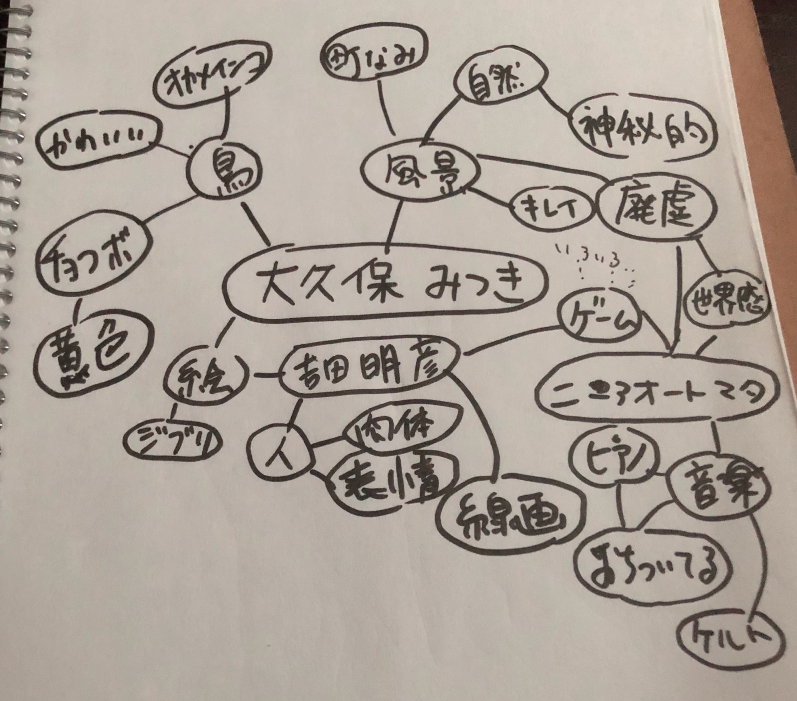

マインドマップ

この中から、神秘的・幻想的をピックアップして、
ファンtジー・SF
班になりました。
私たちの班はファンタジー的に、MESHと現実を繋げるためにはどうしたらいいのかを考えました。
考えを話していくなかで意見が３つにわかれたので、１つの班のなかで３つのクループに分けて
それぞれの案を深く考えていきました。出た案は、
宅配・めざまし・日常に効果音をつける
で、わたしは”日常に効果音をつける”のグループで案を深掘りしていきました。
私たちのグループでは、日常とゲームを融合するというのを目標に機能性より楽しさ重視で、日常のちょっとした動作にゲームの効果音がつくと
テンションがあがるのでは？と考え、水を飲む動作でピロピロン♪と回復の効果音が鳴るというのを、様々な
動作と効果音で考えようと思っていましたが、実際に音がついたときにその動きのたびに音がなったら鬱陶しい
のでは？と聞いて、ボツになりました。
次に別の視点から見て”勉強のやる気が湧いてくるペン”を考えました。イメージは進研ゼミの付録についてそうな、
小学生をターゲットにしたペンです。ペンに動きのメッシュをつけ、文字を書いておくごとにレベルアップ音がなるように